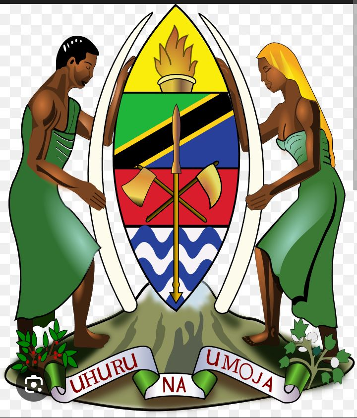
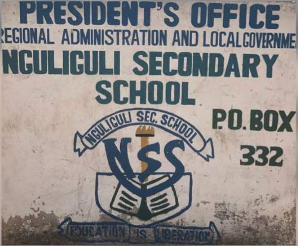

Elimu Bora kwa Maendeleo ya Baadaye

Karibu kwenye tovuti rasmi ya Shule ya Sekondari Nguliguli. Tovuti hii imeandaliwa kwa ajili ya kutoa taarifa muhimu kwa wazazi, wanafunzi na jamii kwa ujumla.
Hapa utaweza kuona matokeo ya wanafunzi, habari mpya za shule na mawasiliano ya shule.
Ona Matokeo Habari MpyaKutoa elimu bora inayomjenga mwanafunzi kuwa na maarifa, maadili na uwezo wa kuchangia maendeleo ya taifa.
Baadhi ya walimu wanaofundisha katika Shule ya Sekondari Nguliguli: